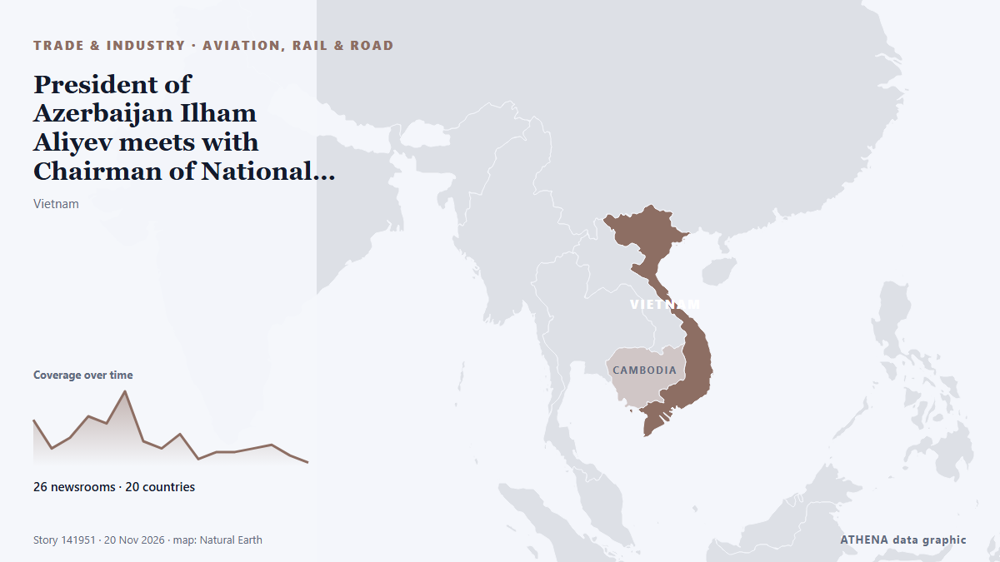

Trade, Industry & Infrastructure
SponsoredPresented by  Cybernetics and Artificial Intelligence Lab Welcome to the Cybernetics and Artificial Intelligence Laboratory, established at the Department of Business Administration of the National and Kapodistrian University of Athens. The lab is headed by Professor Dimitrios Thomakos. The lab aims to do research that can be published in top venues. Our research uses tools and methods of Artificial Intelligence, and lies in the following areas: - Forecasting - Decision making - Cyber security - Finance We are always looking forward to collaborating with exceptional students!
Cybernetics and Artificial Intelligence Lab Welcome to the Cybernetics and Artificial Intelligence Laboratory, established at the Department of Business Administration of the National and Kapodistrian University of Athens. The lab is headed by Professor Dimitrios Thomakos. The lab aims to do research that can be published in top venues. Our research uses tools and methods of Artificial Intelligence, and lies in the following areas: - Forecasting - Decision making - Cyber security - Finance We are always looking forward to collaborating with exceptional students!

Aviation, rail & roadPresident of Azerbaijan Ilham Aliyev meets with Chairman of National Assembly of Vietnam in Hanoi
President of the Republic of Azerbaijan Ilham Aliyev met with Tran Thanh Man, Chairman of the National Assembly of the Socialist Republic of Vietnam, in Hanoi on November 20. from AzerNews
| 7 Nov | 44 |
|---|---|
| 8 Nov | 49 |
| 9 Nov | 118 |
| 10 Nov | 145 |
| 11 Nov | 109 |
| 12 Nov | 94 |
| 13 Nov | 84 |
| 14 Nov | 78 |
| 15 Nov | 65 |
| 16 Nov | 120 |
| 17 Nov | 94 |
| 18 Nov | 95 |
| 19 Nov | 54 |
| 20 Nov | 21 |
S’porean charged with trafficking 19kg of cannabis at Ipoh airport
No plea was recorded from Chen Long in the Ipoh magistrates' court as the case falls under the High Court's jurisdiction. from Free Malaysia Today
Thailand seeks lower US tariffs on forced labour and excess capacity
Thailand is seeking to reduce additional US tariffs on Thai goods from 12.5% to 10% under measures related to forced labour, while pushing for the lowest possible tariffs under proposed US measures… from Khaosod English
Sallaum Logistics opens inland customs bonded compound in the Port of Limburg, Genk
The new site extends the Sallaum Terminal in Antwerp inland reachable by river, rail and road Sallaum Logistics is opening. from Cyprus Shipping News
Russia cannot dictate 'unrealistic security demands': UK premier
Andy Burnham says Europe ready to 'enter serious discussions on European security, but only if a peace agreement is reached between Ukraine and Russia' from Anadolu Agency (English)
A third Ukrainian strike in 4 days halts rail traffic on Russia's Kerch Bridge to Crimea
Ukraine has launched a third aerial attack in four days on the Kerch Bridge, a crucial link between Russia and Crimea. from ABC News (International)
Egypt, Libya sign cooperation agreements after talks in Cairo
Deals cover energy, infrastructure, scientific research, labor, small businesses. from Anadolu Agency (English)
Canada seeks interim U.S. tariff deal by year-end, CBC reports
CBC News reported, citing sources familiar with Thursday’s meeting between Canada-U.S. from investingLive (ForexLive)
Mitsotakis Signals Possible Restrictions on New Building on ‘Iconic’ Greek Islands
Prime Minister Kyriakos Mitsotakis on November 19 raised the possibility of imposing restrictions on new building development on islands such as Mykonos and Santorini in Greece’s new spatial planning… from The National Herald
Steer Acquires Mercator International
Steer has completed the acquisition of Mercator International, a specialist ports, maritime and freight consultancy, as it continues to expand its international advisory business… from Maritime Professional
Ukraine launches another strike on Crimean Bridge
Ukraine reportedly launched a third strike on the Crimean Bridge this week, targeting its railway section after earlier attacks destroyed part of the road bridge. from Baltic News Network
Waymo pulls driverless taxis from freeways after California ban
California has barred Waymo autonomous taxis from its freeways after they were involved in at least two incidents in construction zones. from UPI World News
Crimean Bridge attacked again, Russia says
The Crimean Bridge has been attacked by Ukraine for the third time this week, Russia has said. from MyJoyOnline
US tightens Iran blockade with curbs on oil transfers at sea, advisory shows
London: The US military will treat ships that receive cargo at sea from vessels loaded in Iran as attempting to evade its blockade of Iranian ports and could take action against them, according to an… from Deccan Herald
China's 15th Five-Year Plan presents opportunities for growth of Asia-Pacific and beyond: Xi
Chinese president urges regional economies to uphold multilateralism, deepen cooperation in AI, digital trade. from Express Tribune
Strike Risk Grows at Busiest US Ports as Contract Talks Stall
Contract negotiations between security workers at the Ports of Los Angeles and Long Beach and their employers have stalled, setting up a “real potential” for a strike starting on Saturday that could… from Insurance Journal
See How Much Companies Are Getting in Tariff Refunds
Some firms are directing refunds to corporate leadership instead of reimbursing consumers, ProPublica finds Several companies that received refunds for paying Donald Trump’s tariffs have put those… from Guardian Business
ITF joins ISF Verify to help scale trusted digital seafarer certification worldwide
The International Transport Workers’ Federation has joined the ISF Verify project, to support the roll-out to the ITF’s seafarer network. from Cyprus Shipping News
PM Anwar credits govt measures for Malaysia’s strong growth despite West Asia crisis
KUALA LUMPUR, Nov 18 — The Madani government’s proactive measures to safeguard economic stability and ensure fuel supply... from Malay Mail
IMO’s Marine Environment Protection Committee MEPC 85 to discuss shipping emissions, pollution and other ocean issues
The Marine Environment Protection Committee (MEPC) of the International Maritime Organization (IMO) will meet for its 85th session at IMO. from Cyprus Shipping News
VARD and partners receive funding to Advanced Nuclear Propulsion for Ships
The Research Council of Norway has awarded $2 million (NOK 20 million) in initial funding to the Emerald Nuclear Norway-led. from Cyprus Shipping News
57% of organisations expect AI to make more than a quarter of warehouse operational decisions autonomously by 2028, MIT CTL–Mecalux study finds
A global survey of nearly 2,000 supply chain professionals shows at least moderate improvement in 87% of GenAI use cases,. from Cyprus Shipping News
Flights, banks, emails: What we know about a U.S. wave of tech outages
A string of technical outages across the U.S. has disrupted everything from air travel and banking to security systems, raising questions about whether the seemingly unrelated incidents are caused by… from CBC News
Russian flight lands in Turkey after bomb threat hoax
The Sukhoi Superjet 100 was flying from Mineralnye Vody in southern Russia to Antalya, where the COP31 UN climate summit is taking place. from Free Malaysia Today
Judge extends block on construction of Trump's triumphal arch
US District Judge Tanya Chutkan extended a restraining order issued on November 5 by two weeks that temporarily halted the arch’s construction. from The Jerusalem Post
Tesla will build Cybercabs in Berlin as US buyers face a $299 monthly fee
A €3bn expansion of Tesla’s factory near Berlin will make Cybercabs from 2029. from The Next Web
Irish man charged with destroying US military C-130 aircraft
NEW YORK: An Irish man has been charged with damaging a US military C-130 aircraft at an airport in Ireland in an attack that left the plane “effectively destroyed”, prosecutors said on Tuesday. from New Straits Times
Shipping Organizations Urges IMO Agreement on GHG Regulations
Nine major international shipping associations have issued a joint appeal to governments to reach agreement on global greenhouse gas (GHG) regulations, warning that… from Maritime Professional
CMA CGM triples profit as Q3 freight rates and cargo volumes rise
Shipping drives earnings growth, while logistics margins weaken despite higher revenue. from FreightWaves
Iran targeted US infrastructure with cyberattacks since start of war, Homeland Security chief says
US Homeland Security Secretary Markwayne Mullin did not link Tehran to the latest series of major technological outages across the country. from The Jerusalem Post
Ukraine strikes Russian bridge in occupied Luhansk Oblast, damages 3 military aircraft, General Staff says
Russian forces used the bridge near Stanytsia Luhanska to transport ammunition, fuel, and equipment to the front, according to the General Staff. from Kyiv Independent
Leavitt: White House needs to 'calm the temperature' after nationwide tech outages
Former White House Press Secretary Karoline Leavitt called on the White House to be more transparent regarding to the nationwide tech outages in recent days, advising officials to spread their… from The Hill
Rubio says US not ‘under systemic attack’ after series of tech outages
Rubio's comments came hours after US Director of National Intelligence Jay Clayton also addressed the issue. from Capital FM Kenya
At APC Presidential Rally In Birnin Kebbi, Tinubu Approves Inland Dry Port For Kebbi
• Says it’s strategic towards boosting the state’s economy •Pledges improved security and completion of landmark projects •Former govs Aliero, Bagudu and Dankingari back his re-election Deji Elumoye… from ThisDay (Nigeria)
Yemen ambassador to Kuwait warns of wider regional security risks
KUWAIT CITY, Nov 17: Ambassador of Yemen to Kuwait Dr. from Arab Times